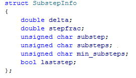

SubstepInfo

This struct contains information about substeps done by the framework
double delta
The delta (difference) time given in seconds between the previous and the current substep
double stepfrac
The current substep delta time given as a fraction (between 0.0 and 1.0)
unsigned char substep
The current substep index (always < substeps)
unsigned char substeps
The maximum amount of substeps. This is only validly useful if the user is not using adaptive stepping.
unsigned char min_substeps
This is the minimum amount of substeps the framework uses.
bool laststep
This is true if the current substep is the last one taken.